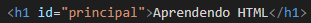
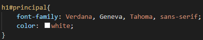
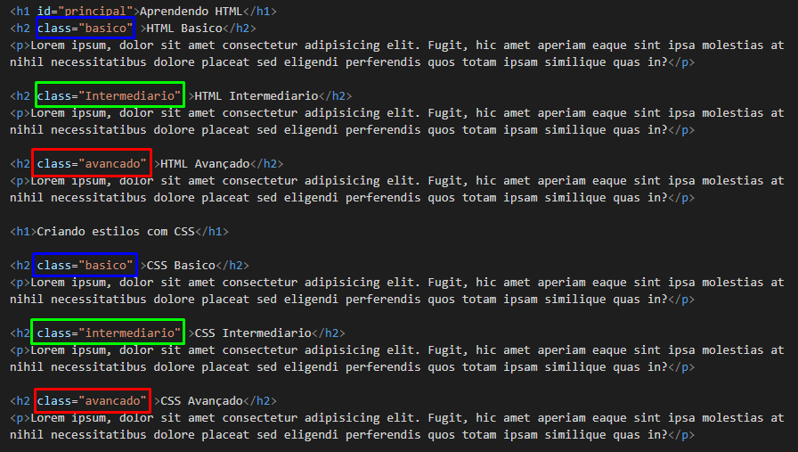
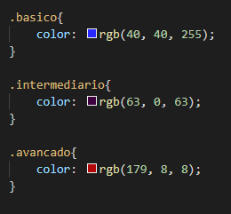

Agora vamos conhecer alguns tipos de seletores personalizados, começando pelo ID. Digamos que você tenha um conteúdo em um paragráfo na qual esse conteúdo em específico precise de um destaque diferenciado em relação aos outros paragráfos, tendo em vista que todos os paragráfos ficam alocados dentro de uma tag < p > e que teoricamente qualquer mudança que façamos nas configurações de estilos afetaria por completo todos os paragráfos na qual a tag <p> se encontrasse. Como fazer então, para deixar apenas aquele paragráfo em especifico difereciado do resto? Bom, para fazer isso devemos usar o seletor personalizado chamado de ID. Basicamente, você define qual conteúdo você quer que se torne único colocando o comando "id" entre a tag, e dando um nome a esse "id" exemplo:
Após isso basta ir nas configurações de estilo setar a configuração para esse id, como o nosso id esta detro de um h1, então nós identificamos esse h1 normalmente e adicionamos uma hashtag seguido do nome do id (tudo junto) como mostra o exemplo abaixo:
Feito isso, esse h1 em especifico terá a possibilidade de ter configurações únicas em relação aos outros h1. E para perceber isso mais nitidamente, basta acessar a página de exemplo e ver que existe uma diferença de cor e fonte entre o h1 que está escrito "criando um site com html" e o h1 que está escrito "aprendendo html".
A possibilidade na qual o ID nos proporciona é bastante interessante, porém ele é um pouco limitado, a W3school nos diz que: "Em um mesmo documento HTML não se pode ter o mesmo Id para vários itens", ou seja, não se pode usar o mesmo Id, com o mesmo nome para configurar varios itens, e para isso existe o nosso próximo seletor personalizado chamado "Class", com esse seletor você é capaz de declarar várias classes com o mesmo nome. É válido lembrar que o id se identifica nas configurações de css com uma "#", já o class se identifica com um ".". O exemplo a seguir mostra o class sendo usado para trocar as cores dos topicos nas quais eles estao associados:
 Para acessar a página de exemplo basta clicar aqui.